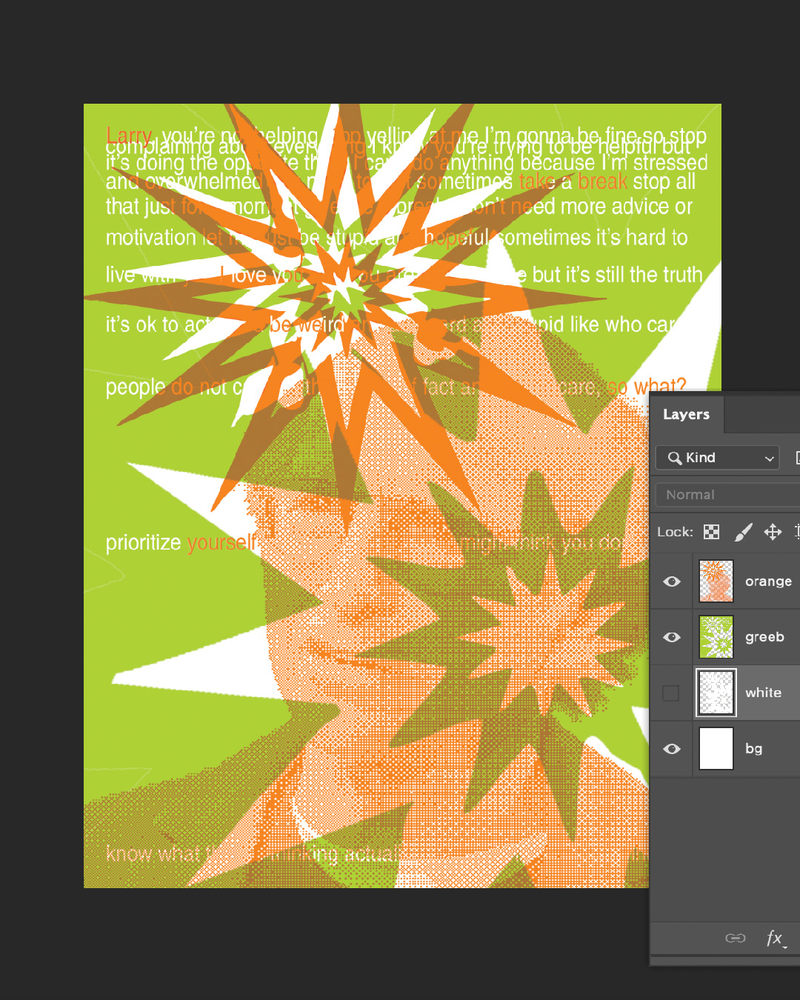
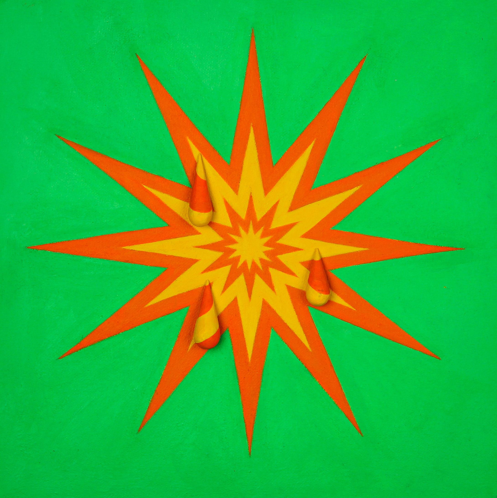

Anxiety screenprint
Naming your anxiety is brat—mine's named Larry David since he can be quite difficult sometimes.
This is a two layer screenprint using my painting from 2021 (below) about social anxiety as a direct inspiration. It uses the two different translucent layers of colors to clash, and while most of the text are obstructed, the ones filled in orange are highlighted.